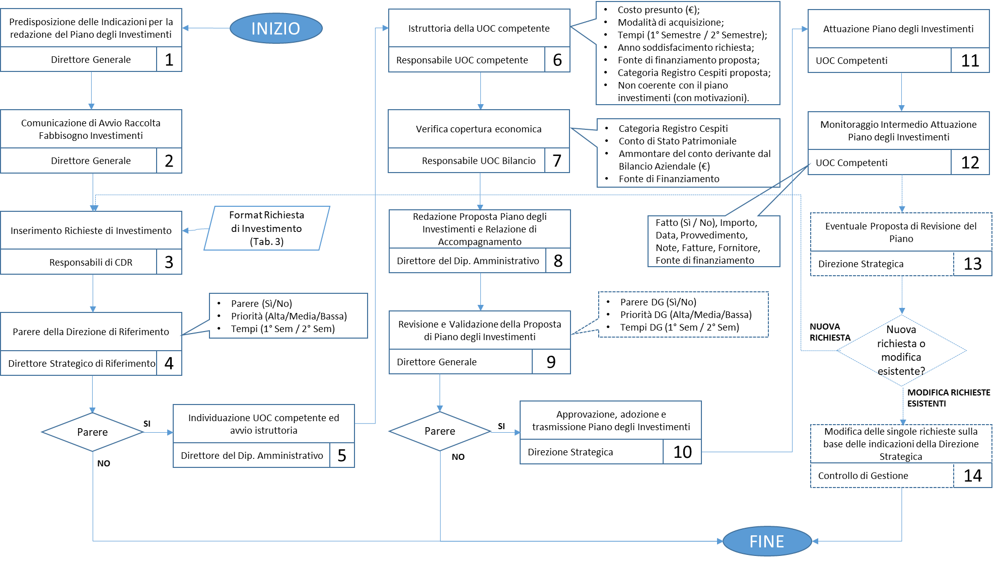
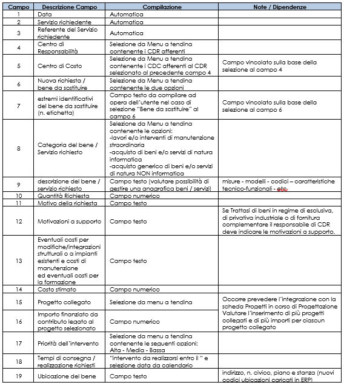
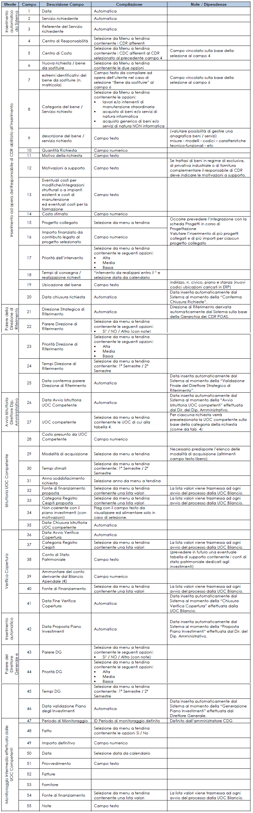

Man Tecnico:Investimenti
Analisi dei requisiti
Tale documento ha l’obiettivo di descrivere le funzionalità della Scheda “Piano degli Investimenti” che l’agenzia intende implementare al fine di informatizzare l’attività descritta all’interno della procedura di Redazione Piano degli investimenti.
La Scheda “Piano degli investimenti” costituirà un modulo della scheda di Budget web già in uso presso la ATS Città Metropolitana di Milano, dovrà consentire l’attuazione dell’intero processo di programmazione e monitoraggio degli investimenti in maniera informatizzata, con riguardo ai ruoli delle diverse categorie di utenti, le fasi ed i requisiti funzionali definiti all’interno della sopra richiamata procedura e dovrà recepire eventuali modifiche dei contenuti della stessa.
La procedura alla quale si fa riferimento descrive:
- le responsabilità,
- le tempistiche,
- le modalità autorizzative e operative relative a
- predisposizione, approvazione,
- attuazione (ed eventuale revisione) del Piano degli investimenti.
La scheda “Piano degli investimenti” dovrà recepire eventuali future variazioni della procedura al fine di rispettarne integralmente i contenuti.
Il Piano degli Investimenti è uno strumento di pianificazione, programmazione e controllo predisposto su un arco di riferimento temporale triennale e redatto unitamente al Bilancio Economico Preventivo aziendale, risulta pertanto essenziale che esso rientri nel più ampio processo di programmazione e controllo dell’agenzia, attuato mediante il supporto della scheda budget informatizzata.
Descrizione fasi del processo
- Predisposizione delle Indicazioni per la predisposizione del piano degli investimenti da parte della Direzione Strategica;
- Avvio Raccolta del Fabbisogno: Comunicazione da parte del Dipartimento Amministrativo ai Direttori di Dipartimento ed ai Direttori Strategici contenente le indicazioni per la raccolta delle richieste di lavori/beni da inserire nel Piano degli Investimenti.
- Compilazione della scheda “Piano degli Investimenti” da parte di tutti i Responsabili di Dipartimento/UO di Staff e Direttori abilitati all’interno della scheda di Budget.
- Valutazione di merito e di coerenza con le necessità, le priorità e gli obiettivi aziendali di ATS da parte della Direzione di riferimento, previa raccolta di eventuali informazioni aggiuntive, e definizione delle priorità di intervento.
- Il Direttore del Dipartimento Amministrativo individua per ogni richiesta pervenuta un’area di pertinenza ed invia le proposte pervenute alle UOC competenti (UOC Gestione del Patrimonio e Progetti di Investimento, UOC Sistemi Informativi Aziendali, UOC Gestione Contratti e Monitoraggio Spesa) per lo svolgimento della relativa istruttoria.
- Istruttoria da parte delle UOC competenti per singola richiesta di investimento ed avvio della successiva fase di verifica copertura economico finanziaria.
- La UOC Bilancio, Programmazione, Rendicontazione e Monitoraggio verifica la copertura economico finanziaria per ciascuna richiesta ed invia il riscontro dell’istruttoria al Dipartimento Amministrativo.
- Predisposizione Piano Degli Investimenti (Annuale) da parte del Direttore del Dipartimento Amministrativo, validazione e trasmissione al Direttore Generale con una relazione di accompagnamento.
- Approvazione del Piano degli Investimenti, comprensivo di eventuali revisioni, da parte del Direttore Generale mediante atto deliberativo.
- Trasmissione del Piano Investimenti ai CDR (per quanto di competenza e come riscontro circa le richieste effettuate).
- Attuazione, mediante un’apposita determina del Direttore del Dipartimento Amministrativo, di ogni singolo intervento previsto nel Piano degli Investimenti approvato dalla Direzione Generale.
- Monitoraggio semestrale degli interventi realizzati rispetto a quelli previsti ed alle relative tempistiche da parte dei CDR competenti.
- Qualora nel tempo intercorso fra l’approvazione del Piano e la presentazione del Bilancio emergano necessità di rivedere il Piano per modificare gli interventi inseriti o la priorità degli stessi il Dipartimento Amministrativo provvede a redigere una proposta di aggiornamento del Piano sentendo le Direzioni/i Dipartimenti coinvolti ed effettuando l’istruttoria con le UOC amministrative di riferimento.

Descrizione delle funzionalità
Il responsabile di CDR, accedendo alla scheda di budget già in uso presso la ATS Città Metropolitana di Milano, troverà la scheda “Piano degli Investimenti” nella barra dei menu (barra verticale a sinistra). La Scheda “Piano degli Investimenti” sarà strutturata in sei differenti sezioni, accessibili o meno sulla base del ruolo del singolo utente e della fase del processo di predisposizione del piano degli investimenti:
- Indicazioni per la predisposizione del Piano degli Investimenti – Accessibile in modifica da parte del Direttore Generale ed in sola visualizzazione da parte degli altri utenti che accedono alla Scheda.
- Inserimento Richieste di Investimento – Accessibile per tutti i Responsabili dei CDR abilitati alla richiesta di investimenti (attualmente solo Dipartimenti).
- Parere Direzione di Riferimento – Visibile solo dai componenti della Direzione Strategica, riporta le richieste inserite nella sezione B per le aree di competenza.
- Istruttoria – Visibile al Direttore del Dip. Amministrativo, alle UOC “competenti” sulla base della tipologia di richiesta ed alla UOC Bilancio, Programmazione, Rendicontazione e Monitoraggio.
- Piano Investimenti – Accessibile al Direttore Generale in modifica e, a partire dalla convalida definitiva, accessibile in sola visualizzazione per tutti i responsabili dei CDR abilitati alla richiesta di investimenti.
Si evidenzia che per ciascuna delle fasi previste verrà fornito un tasto di “Chiusura Richieste” che consentirà, una volta processate tutte le richieste, di dare avvio alla fase successiva. Tuttavia, in fase di revisione del piano, dovrà essere possibile eseguire l’iter della singola nuova richiesta.
Gli utenti che accedono alla scheda “Piano degli Investimenti” avranno privilegi specifici sulla base del ruolo ricoperto all’interno delle fasi descritte in precedenza. Oltre agli utenti coinvolti nelle diverse fasi occorre prevedere una sezione “amministratore CDG” atta a gestire le tabelle di supporto della scheda ed estrazioni di dettaglio dei contenuti inseriti dai diversi attori che partecipano al processo.
Responsabile di CDR (Dipartimenti / UO di Staff / Direzioni)
Il Responsabile di CDR ((Dipartimenti / UO di Staff / Direzioni)) accedendo alla Scheda “Piano degli Investimenti” potrà:
- Consultare la sezione Indicazioni per la predisposizione del Piano degli Investimenti in sola lettura;
- Accedere alla sezione “Inserimento Richieste di Investimento” per:
- Inserire le richieste di investimenti secondo il format proposto dalla scheda di Richiesta Investimento;
- Visualizzare in una tabella di sintesi le richieste inserite (all’interno della tabella dovrà essere visualizzato un contenuto minimale che identifichi la richiesta, la fase del processo ed eventuali ulteriori informazioni inerenti la decisione assunta dalla Direzione Strategica in merito alla richiesta inserita);
- Modificare o Eliminare le richieste già inserite;
- Evadere la scheda una volta concluso l’inserimento di tutte le richieste mediante un apposito pulsante di “Conferma Chiusura Richieste”;
- Accedere al dettaglio della singola richiesta effettuata che dovrà contenere le informazioni relative alla richiesta e quelle inserite nelle diverse fasi del processo (parere direzione, istruttoria UOC competenti, istruttoria UOC Bilancio, parere DG).
- Accedere alla sezione “Piano degli Investimenti” al fine di visualizzare le richieste contenute nel Piano degli Investimenti definitivo approvato dal Direttore Generale e le informazioni di monitoraggio inserite dalle UOC competenti.
Cruscotto
Alle sezioni sopra riportate si aggiunge un cruscotto di monitoraggio che conterrà report di sintesi relativi alle diverse fasi del processo ed alle informazioni inserite, al quale avranno accesso tutti gli utenti che partecipano a vario titolo al processo di predisposizione del piano investimenti. Tale cruscotto sarà organizzato nelle seguenti sezioni:
- Stato avanzamento richieste: gli utenti potranno visualizzare una sintesi relativa allo stato del processo di approvazione ed attuazione del piano investimenti;
- Istruttoria: una sezione sintetica che rappresenta per fonte di finanziamento e categoria di investimento gli importi stimati dalle UOC competenti in fase di istruttoria. La sintesi riporta inoltre per fonte di finanziamento:
- Totale Fonte Finanziamento
- Budget Fonte Finanziamento
- Erosione Fonte Finanziamento
- Verifica Copertura: sezione sintetica che rappresenta per fonte di finanziamento e categoria di investimento gli importi validati dalla UOC Bilancio che conferma o meno la fonte di finanziamento da utilizzare e la categoria registro cespiti effettiva. In tale sezione potranno essere rintracciate le modifiche tra la fase di verifica copertura e quella precedente di istruttoria.
- Piano investimenti: All'interno della quale il report di cui alla sezione precedente viene aggiornato sulla base dell'effettiva attuazione del piano con gli importi a consuntivo effettivamente sostenuti per l'acquisizione dell'investimento.
Scheda di richiesta investimento

Direttore Strategico di Riferimento
Il Direttore Strategico di Riferimento (Direttore Generale, Direttore Amministrativo, Direttore Sanitario, Direttore Sociosanitario) accedendo alla scheda “Piano degli Investimenti” potrà:
- Consultare la sezione Indicazioni per la predisposizione del Piano degli Investimenti in sola lettura;
- Accedere alla sezione “Inserimento Richieste di Investimento” per:
- Inserire le richieste di investimenti secondo il format proposto dalla scheda di Richiesta Investimento;
- Visualizzare in una tabella di sintesi le richieste inserite (all’interno della tabella dovrà essere visualizzato un contenuto minimale che identifichi la richiesta, la fase del processo ed eventuali ulteriori informazioni inerenti la decisione assunta dalla Direzione Strategica in merito alla richiesta inserita);
- Modificare o Eliminare le richieste già inserite;
- Evadere la scheda una volta concluso l’inserimento di tutte le richieste mediante un apposito pulsante di “Conferma Chiusura Richieste”;
- Accedere al dettaglio della singola richiesta effettuata che dovrà contenere le informazioni relative alla richiesta e quelle inserite nelle diverse fasi del processo (parere direzione, istruttoria UOC competenti, istruttoria UOC Bilancio, parere DG).
- Accedere alla sezione “Parere Direzione di Riferimento” al fine di:
- Visualizzare le richieste di investimento inserite e “Chiuse” dai CDR afferenti alla propria Direzione;
- Accedere al dettaglio della singola richiesta in consultazione;
- Compilare, per singola richiesta, l’area dedicata al Direttore Strategico di riferimento all’interno della quale dovrà inserire il proprio parere in termini di:
- Parere: SI’ / NO / Altro (con campo note testuale)
- Priorità: ALTA / MEDIA / BASSA
- Tempi: 1° Semestre / 2° Semestre
- Procedere con la “Validazione Finale del Direttore Strategico di Riferimento” dal fine di avviare la fase successiva.
- Accedere alla sezione “Piano degli Investimenti” al fine di visualizzare le richieste contenute nel Piano degli Investimenti definitivo approvato dal Direttore Generale e le informazioni di monitoraggio inserite dalle UOC competenti.
Direttore del Dipartimento Amministrativo
Il Direttore del Dip. Amministrativo, accedendo alla scheda “Piano degli Investimenti”, potrà:
- Consultare la sezione Indicazioni per la predisposizione del Piano degli Investimenti in sola lettura;
- Accedere alla sezione “Inserimento Richieste di Investimento” per:
- Inserire le richieste di investimenti secondo il format proposto dalla scheda di Richiesta Investimento);
- Visualizzare in una tabella di sintesi le richieste inserite (all’interno della tabella dovrà essere visualizzato un contenuto minimale che identifichi la richiesta, la fase del processo ed eventuali ulteriori informazioni inerenti la decisione assunta dalla Direzione Strategica in merito alla richiesta inserita);
- Modificare o Eliminare le richieste già inserite;
- Evadere la scheda una volta concluso l’inserimento di tutte le richieste mediante un apposito pulsante di “Conferma Chiusura Richieste”;
- Accedere al dettaglio della singola richiesta effettuata che dovrà contenere le informazioni relative alla richiesta e quelle inserite nelle diverse fasi del processo (parere direzione, istruttoria UOC competenti, istruttoria UOC Bilancio, parere DG).
- Accedere alla sezione “Istruttoria” al fine di:
- Visualizzare le richieste di investimento “Validate” dalle Direzioni Strategiche;
- Accedere al dettaglio della singola richiesta in consultazione;
- Confermare, per singola richiesta, la UOC Competente per l’effettuazione dell’istruttoria mediante un apposito menu a tendina precompilato sulla base del collegamento proposto nella seguente tabella tra “Categoria del bene / Servizio richiesto” (campo 8 della scheda di Richiesta Investimento) e UOC Competente.
- Procedere con l’ “Avvio Istruttoria UOC Competenti” mediante apposito tasto.
- Una volta conclusa l’istruttoria delle UOC Competenti (fase 6) il Direttore del Dip. Amministrativo visualizzerà il cambio di “Stato” della richiesta all’interno della sezione “Istruttoria” visualizzando “Verifica Copertura” (fase 7).
- Una volta conclusa la fase di “Verifica Copertura” da parte della UOC Bilancio (fase 8) il Direttore del Dip. Amministrativo provvederà a “Validare la Proposta di Piano Investimenti” provvedendo anche ad allegare apposita relazione di accompagnamento (verificare la possibilità di creare un format di relazione di accompagnamento)
- Accedere alla sezione “Piano degli Investimenti” al fine di visualizzare le richieste contenute nel Piano degli Investimenti definitivo approvato dal Direttore Generale e le informazioni di monitoraggio inserite dalle UOC competenti.
| CATEGORIA RICHIESTA | UOC COMPETENTE |
|---|---|
| lavori e/o interventi di manutenzione straordinaria | UOC Gestione del Patrimonio e Progetti di Investimento |
| acquisto di beni e/o servizi di natura informatica | UOC Sistemi Informativi Aziendali |
| acquisto generico di beni e/o servizi di natura NON informatica | UOC Gestione Contratti e Monitoraggio Spesa |
Responsabile di UOC Competente per tipologia di richiesta
I Responsabili delle UOC individuate quali competenti per l’effettuazione dell’istruttoria accedono alla scheda “Piano degli Investimenti” e potranno:
- Accedere alla Scheda “Istruttoria”, all’interno della quale saranno riportate le richieste per le quali il Direttore del Dip. Amministrativo ha avviato la fase di Istruttoria. Tali UOC quindi saranno chiamate all’effettuazione della suddetta istruttoria, che dovrà essere formalizzata mediante la compilazione delle seguenti informazioni:
- Costo presunto (€)
- Modalità di acquisizione (selezione da menu a tendina)
- Tempi (1° Semestre / 2° Semestre)
- Anno soddisfacimento richiesta
- Fonte di finanziamento proposta
- Categoria Registro Cespiti Proposta
- Non coerente con il piano investimenti (con motivazioni)
- Una volta inserite le informazioni per ciascuna richiesta la UOC procederà con la “chiusura istruttoria UOC competente”. Successivamente accederà alla sezione “Piano degli Investimenti” al fine di visualizzare le richieste contenute nel Piano degli Investimenti definitivo approvato dal Direttore Generale e procedere al monitoraggio periodico dell’attuazione del Piano mediante la compilazione delle seguenti informazioni (per ciascuna richiesta):
- Fatto (Sì / No)
- Importo definitivo
- Data
- Provvedimento
- Fatture
- Fornitore
- Fonte di finanziamento
- Note
Responsabile della UOC Bilancio, Programmazione, Rendicontazione e Monitoraggio
Il Responsabile della UOC Bilancio, Programmazione, Rendicontazione accede alla scheda “Piano degli Investimenti” e potrà visualizzare unicamente la Scheda “Istruttoria”, all’interno della quale saranno riportate le richieste per le quali il Direttore del Dip. Amministrativo ha avviato la fase di “Verifica Copertura”.
La UOC sarà quindi chiamata ad effettuare le opportune verifiche circa la copertura della spesa per investimenti prevista dalla UOC competente inserendo per ciascuna richiesta le seguenti informazioni:
- Categoria Registro Cespiti
- Conto di Stato Patrimoniale
- Ammontare del conto derivante dal Bilancio Aziendale (€)
- Fonte di finanziamento
Una volta inserite le informazioni per ciascuna richiesta la UOC procederà con la “chiusura verifica copertura”.
Direttore Generale
Il Direttore Generale accedendo alla scheda “Piano degli Investimenti” potrà:
- Visualizzare la sezione “Indicazioni per la predisposizione del Piano Investimenti” in modalità di compilazione e modifica dei contenuti. Una volta effettuata la compilazione delle indicazioni procederà alla pubblicazione delle Indicazioni definitive che, da questo momento, risulteranno visibili anche dagli altri Responsabili di CDR e Direttori (verificare la possibilità di creare un format per la predisposizione delle Indicazioni).
- Accedere alla sezione “Inserimento Richieste di Investimento” per:
- Inserire le richieste di investimenti secondo il format proposto dalla scheda (di cui al paragrafo di dettaglio 5.2.1.1 – Scheda di Richiesta Investimento);
- Visualizzare in una tabella di sintesi le richieste inserite (all’interno della tabella dovrà essere visualizzato un contenuto minimale che identifichi la richiesta, la fase del processo ed eventuali ulteriori informazioni inerenti la decisione assunta dalla Direzione Strategica in merito alla richiesta inserita);
- Modificare o Eliminare le richieste già inserite;
- Evadere la scheda una volta concluso l’inserimento di tutte le richieste mediante un apposito pulsante di “Conferma Chiusura Richieste”;
- Accedere al dettaglio della singola richiesta effettuata che dovrà contenere le informazioni relative alla richiesta e quelle inserite nelle diverse fasi del processo (parere direzione, istruttoria UOC competenti, istruttoria UOC Bilancio, parere DG).
- Accedere alla sezione “Parere Direzione di Riferimento” al fine di:
- Visualizzare le richieste di investimento inserite e “Chiuse” dai CDR afferenti alla propria Direzione;
- Accedere al dettaglio della singola richiesta in consultazione;
- Compilare, per singola richiesta, l’area dedicata al Direttore Strategico di riferimento all’interno della quale dovrà inserire il proprio parere in termini di:
- Parere: SI’ / NO / Altro (con campo note testuale)
- Priorità: ALTA / MEDIA / BASSA
- Tempi: 1° Semestre / 2° Semestre
- Procedere con la “Validazione Finale del Direttore Strategico di Riferimento” dal fine di avviare la fase successiva.
- Accedere alla sezione “Piano degli Investimenti” al fine di:
- Visualizzare le richieste contenute nella “Proposta Piano degli Investimenti” e la relazione di accompagnamento inviate dal Direttore del Dip. Amministrativo.
- Per ciascuna richiesta potrà eventualmente inserire un “Parere DG” mediante l’utilizzo dei seguenti campi:
- Parere DG: SI’ / NO / Altro (con campo note testuale)
- Priorità DG: ALTA / MEDIA / BASSA
- Tempi DG: 1° Semestre / 2° Semestre
- Una volta compilati i campi necessari il Direttore Generale procederà alla “Generazione Piano degli Investimenti” definitivo mediante un apposito tasto. Il Piano degli Investimenti, da questo momento visualizzabile anche per gli altri utenti della scheda, conterrà solo le richieste che non saranno state rigettate dal Direttore Generale (Parere DG = “NO”).
Amministratore CDG
L’utente “Amministratore CDG” dovrà:
- Definire i CDR abilitati alla visualizzazione della Scheda “Piano degli Investimenti” ed all’inserimento delle richieste di investimento;
- poter accedere (attraverso selezione dell’utente) a tutte le sezioni in uso per ciascuno degli utenti della scheda;
- effettuare estrazioni in formato excel dell’elenco richieste con un tracciato completo di tutte le informazioni inserite;
- modificare/aggiungere/eliminare le tabelle utilizzate per la creazione dei menu a tendina disponibili all’interno delle diverse sezioni della scheda;
- modificare/aggiungere/eliminare la tabella di collegamento tra Categoria Richiesta e UOC competente.
- Modificare le date di chiusura/avvio delle diverse fasi per la singola richiesta al fine di consentire la revisione della richiesta o dei singoli pareri inseriti.
- Creare/Modificare/Aprire/Chiudere i periodi di monitoraggio intermedio dell’attuazione del Piano degli Investimenti.
Tracciato Investimenti

Scelte implementative
Il punto focale dello sviluppo del modulo è costituito dalla rappresentazione del workflow di approvazione delle richieste. Verrà quindi in primis definito un modello delle fasi delle richieste tramite la classe Investimenti, che sarà rappresentato da un attributo della stessa costituito da un array di array delle fasi (ID e descrizione della fase). Nella classe verrà poi implementato un metodo per l'individuazione dello stato di una richiesta di investimento. Questa scelta garantirà flessibilità in caso di modifica del workflow di approvazione; sarà infatti possibile cambiarlo semplicemente modificando l'array delle fasi e il metodo per l'individuazione dello stato.
Le funzionalità del modulo saranno anch'esse suddivise in base alla fase della richiesta e rappresentate da voci di menù differenti, visualizzate dipendentemente dal ruolo dell'utente nel processo. Ogni fase sarà rappresentata da una semplice Grid con l'elenco delle richieste nello stato d'avanzamento rappresentato dalla pagina, visualizzabili o modificabili in base e al ruolo dell'utente. Tutte le Grid linkeranno ad un solo ed unico Record nel quale i campi della richiesta verranno visualizzati dinamicamente in base alla fase dell'investimento e saranno modificabili in base al ruolo dell'utente. I ruoli per il processo vengono gestiti tramite tabelle del DB per garantire la flessibilità dello strumento: i moduli infatti, come vincolo di analisi dell'applicativo, devono dover rimanere trasparenti al core. Il processo prevede un ruolo specifico per le UOC competenti, la Direzione amministrativa, la UOC di bilancio ecc. Ovviamente definendo queste entità collegandole ai CdR definiti nel core tramite la loro tipologia o descrizione si opterebbe per una scelta troppo vincolante rispetto alla flessibilità dello strumento perchè si dovrebbe garantire che proprio dal core non si possano effettuare modifiche o eliminazioni. Per ovviare a questo problema vengono definite, per ogni ruolo previsto dal modulo, tabelle specifiche a DB che rappresentano i codici dei CDR definiti con quel ruolo. Questo permette di poter gestire come sempre il core in maniera libera e di adattare il modulo alla struttura organizzativa in qualsiasi momento. Per l'implementazione dei cruscotti, che sono costituiti da tabelle che incrociano le richieste nei vari stati di avanzamento con le fonti di finanziamento e i conti previsti, si opta per utilizzare template personalizzati.
Modello ER
investimenti_categoria (ID, descrizione)
investimenti_categoria_registro_cespiti (ID, descrizione, ID_anno_budget)
investimenti_categoria_uoc_competente_anno (ID, codice_cdr, ID_categoria, anno_inizio, anno_termine)
investimenti_cdr_abilitato_anno (ID, codice_cdr , anno_inizio, anno_termine)
investimenti_cdr_bilancio_anno (ID, codice_cdr, anno_inizio, anno_termine)
investimenti_dipartimento_amministrativo_anno (ID, codice_cdr, anno_inizio, anno_termine)
investimenti_direzione_riferimento_anno (ID, codice_cdr, anno_inizio, anno_termine)
investimenti_fonte_finanziamento (ID, descrizione, budget_anno, ID_anno_budget)
investimenti_investimento (ID, codice_cdr_creazione, ID_anno_budget, data_creazione, richiesta_codice_cdc, richiesta_nuova, richiesta_matricola_bene_da_sostituire, richiesta_ID_categoria, richiesta_descrizione_bene, richiesta_quantita, richiesta_motivo, richiesta_motivazioni_supporto, richiesta_eventuali_costi_aggiuntivi, richiesta_costo_stimato, richiesta_ID_priorita, richiesta_tempi, richiesta_ubicazione_bene, richiesta_data_chiusura, approvazione_ID_parere_direzione_riferimento, approvazione_e_parere_direzione_riferimento, approvazione_ID_priorita_direzione_riferimento, approvazione_ID_tempi_stimati_direzione_riferimento, approvazione_data, approvazione_data_scarto_direzione_riferimento, istruttoria_ID_categoria_uoc_competente_anno, istruttoria_data_avvio, istruttoria_costo_presunto, istruttoria_modalita_acquisizione, istruttoria_ID_tempi_stimati_uoc_competente, istruttoria_anno_soddisfacimento, istruttoria_ID_fonte_finanziamento_proposta, istruttoria_ID_categoria_registro_cespiti_proposta, istruttoria_non_coerente_piano_investimenti, istruttoria_data_chiusura_uoc_competente, istruttoria_data_scarto_uoc_competente, verifica_copertura_ID_registro_cespiti, verifica_copertura_ID_fonte_finanziamento, verifica_copertura_data_fine, proposta_piano_investimenti_data, dg_ID_parere, dg_ID_priorita, dg_ID_tempi, dg_data_validazione_piano_investimenti, dg_data_scarto_piano_investimenti, monitoraggio_importo_definitivo, monitoraggio_data, monitoraggio_provvedimento, monitoraggio_fatture, monitoraggio_fornitore, monitoraggio_ID_fonte_finanziamento, monitoraggio_e mediumtext, monitoraggio_data_chiusura)
investimenti_linee_guida_anno (ID, descrizione, ID_anno_budget)
investimenti_parere_dg (ID, descrizione, esito)
investimenti_parere_direzione_riferimento (ID, descrizione, esito)
investimenti_priorita_dg (ID, descrizione)
investimenti_priorita_direzione_riferimento (ID, descrizione)
investimenti_priorita_intervento (ID, descrizione)
investimenti_tempi_dg (ID, descrizione)
investimenti_tempi_direzione_riferimento (ID, descrizione)
investimenti_tempi_uoc_competente (ID, descrizione)
Modello Classi
class CdrInvestimenti extends Cdr
Rappresenta un Cdr nel modulo investimenti.
- Metodi
:*public function isDirezioneRiferimentoAnno (AnnoBudget $anno) ::Restituisce true se il CdR è una direzione di riferimento per il modulo investimenti nell'anno passato come parametro. :*public function getCdrDirezioneRiferimentoAnno(AnnoBudget $anno) ::Restituisce un oggetto Cdr rappresentante la direzione di riferimento del cdr. :*public function isCdrBilancioAnno (AnnoBudget $anno) ::Restituisce true se il CdR è il CdR che si occupa del bilancio annuale per l'anno passato come parametro. :*public function isDipartimentoAmministrativoAnno (AnnoBudget $anno) ::Restituisce true se il CdR è il CdR che viene definito come Dipartimento Amministrativo nell'anno passato come parametro. :*public function public function isAbilitatoInvestimentiAnno (AnnoBudget $anno) ::Restituisce true se il CdR è abilitato all'accesso del modulo Investimenti nell'anno passato come parametro. :*public function getCategorieCompetenzaAnno (AnnoBudget $anno) ::Restituisce un array di categorie di competenza nell'anno passato come parametro. :*public function getInvestimentiAnno(AnnoBudget $anno) ::Restituisce un array di tutti gli investimenti definiti nell'anno passato come parametro. :*public static function getCdrConRichiesteAnno(AnnoBudget $anno) ::Restituisce un array di tutti i CdR che hanno effettuato almeno una richiesta nell'anno passato come parametro.
class InvestimentiCategoria extends Entity
Rappresenta una catgoria di investimenti.
- Attributi
:*protected static $tablename = "investimenti_categoria";
- Metodi
:*public function getCodiceUocCompetenteAnno (AnnoBudget $anno) ::Viene restituito il codice dell'uoc competente per la categoria istanziata, per l'anno passato come parametro (una e una sola).
class InvestimentiCategoriaRegistroCespiti extends Entity
Rappresenta una catgoria del registro cespiti per gli investimenti.
- Attributi
:*protected static $tablename = "investimenti_categoria_registro_cespiti";
class InvestimentiCategoriaUocCompetenteAnno extends Entity
Rappresenta una UOC competente di una categoria per gli investimenti dell'anno.
- Attributi
:*protected static $tablename = "investimenti_categoria_uoc_competente_anno";
- Metodi
:*public static function getCategoriaUocCompetentiAnno(AnnoBudget $anno, $id_categoria=null) ::Restituisce l'oggetto InvestimentiCategoriaUocCompetente rappresentante la UOC competente di una categoria passata come parametro. :*public static function getUocCompetentiAnno(AnnoBudget $anno) ::Restituisce un array di oggetti CdR rappresentante i cdr definiti come UOC competenti per l'anno.
class InvestimentiCdrAbilitatoAnno extends Entity
Rappresenta un Cdr abilitato ad effettuare richieste di investimenti per un periodo temporale definito.
- Attributi
:*protected static $tablename = "investimenti_cdr_abilitato_anno";
- Metodi
:*public static function getCdrAbilitatiAnno(AnnoBudget $anno) ::Restituisce un array di oggetti CdR rappresentante i Cdr abilitati alla scheda investimenti per l'anno.
class InvestimentiCdrBilancioAnno extends Entity
Rappresenta i Cdr che si occupano di redarre il bilancio per un periodo temporale definito.
- Attributi
:*protected static $tablename = "investimenti_cdr_bilancio_anno";
- Metodi
:*public static function getCdrBilancioAnno(AnnoBudget $anno) ::Restituisce un array di oggetti CdR rappresentante i CdR che si occupano del bilancio per l'anno.
class InvestimentiDipAmministrativoAnno extends Entity
Rappresenta i Cdr definiti come Dipartimento Amministrativo per un periodo definito.
- Attributi
:*protected static $tablename = "investimenti_dipartimento_amministrativo_anno";
- Metodi
:*public static function getCdrDipartimentoAmministrativoAnno(AnnoBudget $anno) ::Restituisce un array di oggetti CdR rappresentante i CdR definiti come dipartimento amministrativo l'anno.
class InvestimentiDirezioneRiferimentoAnno extends Entity
Rappresenta i Cdr definiti come Direzione di riferimento per un periodo definito.
- Attributi
:*protected static $tablename = "investimenti_direzione_riferimento_anno";
- Metodi
:*public static function getDirezioneRiferimentoAnno(AnnoBudget $anno) ::Restituisce un array di oggetti CdR rappresentante i CdR definiti come direzione di riferimento per l'anno.
class InvestimentiFonteFinanziamento extends Entity
Rappresenta una fonte di finanziamento per un anno di budget.
- Attributi
:*protected static $tablename = "investimenti_fonte_finanziamento";
class InvestimentiInvestimento extends Entity
Rappresenta un investimento.
- Attributi
:*protected static $tablename = "investimenti_investimento"; public static $stati_investimento = array(
array( "ID" => 0, "descrizione" => "Anomalia", "esito" => "ko",),
array( "ID" => 1, "descrizione" => "Richiesta in fase di compilazione", "esito" => "",),
array( "ID" => 2, "descrizione" => "Richiesta in fase di approvazione dalla direzione di riferimento", "esito" => "",),
array( "ID" => 3, "descrizione" => "In attesa di avvio istruttoria", "esito" => "",),
array( "ID" => 4, "descrizione" => "Istruttoria UOC competente", "esito" => "",),
array( "ID" => 5, "descrizione" => "In attesa di avvio verifica copertura", "esito" => "",),
array( "ID" => 6, "descrizione" => "In fase di verifica copertura", "esito" => "",),
array( "ID" => 7, "descrizione" => "In attesa di proposta piano investimenti", "esito" => "",),
array( "ID" => 8, "descrizione" => "In attesa di parere della Direzione Generale", "esito" => "",),
array( "ID" => 9, "descrizione" => "In fase di monitoraggio", "esito" => "",),
array( "ID" => 10, "descrizione" => "Chiuso", "esito" => "ok",),
array( "ID" => 11, "descrizione" => "Non approvato dalla direzione di riferimento", "esito" => "ko",),
array( "ID" => 12, "descrizione" => "Non approvato dalla direzione generale", "esito" => "ko",),
array( "ID" => 13, "descrizione" => "Non approvato dalla UOC Competente", "esito" => "ko",),);
- Metodi
:*public static function getAll($where=array(), $order=array(array("fieldname"=>"ID", "direction"=>"ASC"))) ::Viene restituito un array di istanze della classe, corrispondenti a tutti i record della tabella "investimenti_investimento". I parametri $where e $order vengono utilizzati per poter estendere l'utilizzo della getAll() di Entity preselezionando dei valori di default. :*public function getIdStatoAvanzamento () ::Restituisce un intero rappresentante l'indice dell'array degli stati d'avanzamento, corrispondente allo stato d'avanzamento dell'investimento in base alla valorizzazione dei campi. :*public function save() ::Viene salvato a db nella tabella "investimenti_investimento" l'oggetto. Gli attributi vengono salvati come valori dei campi corrispondenti. Se il record esiste già (verifica su ID) viene aggiornato altrimenti viene aggiunto.
class InvestimentiLineeGuidaAnno extends Entity
Rappresenta le linee guida degli investimenti per l'anno.
- Attributi
:*protected static $tablename = "investimenti_linee_guida_anno";
- Metodi
:*public static function factoryFromAnno(AnnoBudget $anno) ::Costruttore da parametri differenti da ID. Viene istanziato un oggetto del tipo della classe utilzzando i parametri pasati per identificare univocamente il record. Se nessun record rispetta i criteri viene restituito false.
class InvestimentiParereDg extends Entity
Rappresenta un'opzione definita per esprimere il parere della direzione generale per gli investimenti.
- Attributi
:*protected static $tablename = "investimenti_parere_dg";
class InvestimentiParereDirezioneRiferimento extends Entity
Rappresenta un'opzione definita per esprimere il parere della direzione di riferimento per gli investimenti.
- Attributi
:*protected static $tablename = "investimenti_parere_direzione_riferimento";
class InvestimentiPrioritaDg extends Entity
Rappresenta un'opzione definita per esprimere la priorità dell'investimento espressa dalla Direzione Generale.
- Attributi
:*protected static $tablename = "investimenti_priorita_dg";
class InvestimentiPrioritaDirezioneRiferimento extends Entity
Rappresenta un'opzione definita per esprimere la priorità dell'investimento espressa dalla Direzione di riferimento.
- Attributi
:*protected static $tablename = "investimenti_priorita_direzione_riferimento";
class InvestimentiPrioritaIntervento extends Entity
Rappresenta un'opzione definita per esprimere la priorità dell'investimento.
- Attributi
:*protected static $tablename = "investimenti_priorita_intervento";
class InvestimentiTempiDg extends Entity
Rappresenta un'opzione definita per esprimere le tempistiche da parte della Direzione Generale.
- Attributi
:*protected static $tablename = "investimenti_tempi_dg";
class InvestimentiTempiDirezioneRiferimento extends Entity
Rappresenta un'opzione definita per esprimere le tempistiche da parte della Direzione di riferimento.
- Attributi
:*protected static $tablename = "investimenti_tempi_direzione_riferimento";
class InvestimentiTempiUocCompetente extends Entity
Rappresenta un'opzione definita per esprimere le tempistiche da parte della UOC competente.
- Attributi
:*protected static $tablename = "investimenti_tempi_uoc_competente";